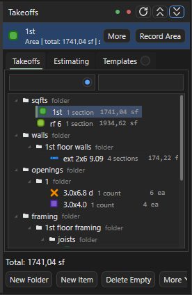
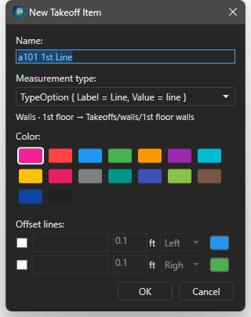
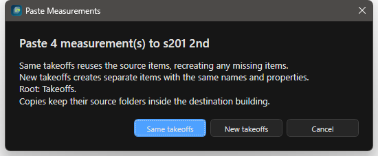
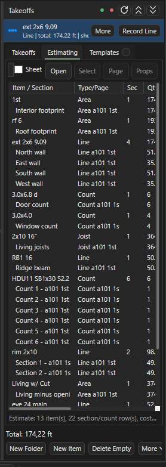
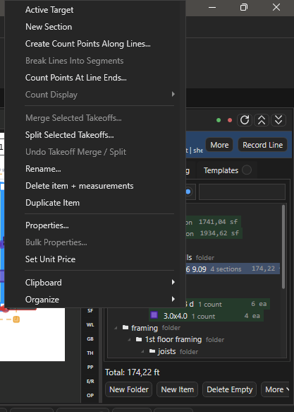

Takeoffs tree¶
This page covers the Takeoffs panel, a new takeoff and Record, copying between sheets and buildings, hiding, search, Estimating. You need it every day; the canonical folders and names are on Takeoff tree and sheet names, several buildings and the green dot on Multiple buildings.

Record, Total; below, the buttons and the tree. Tabs Takeoffs, Estimating, Templates.Panel: reference¶
| Element | What it does |
|---|---|
| Green and red dots | root for new takeoffs: the selected building or all of Takeoffs (multiple buildings) |
Record (Space), More, Props, Find, Sheet, >, < |
the active takeoff line: continue recording, properties, show in the tree, pick a takeoff from this sheet, next and previous |
> (Switch to next takeoff item), < (Switch to previous takeoff item) |
make the next or previous takeoff from the list of all job takeoffs active, wrapping around; status Active takeoff target 3/12: <name>. They do not switch during Record |
More on the active takeoff line |
Properties..., Find in Tree, Sheet Targets... (same as Sheet), Previous Target, Next Target (same as < and >) |
Sheet |
list of takeoffs measured on the open sheet, with quantities; the active one is marked *; at the top Next Sheet Target - the next takeoff of this sheet |
Total |
total of the active takeoff in its units |
New Folder, New Item (T) |
folder and takeoff under the selected folder |
Delete Empty |
delete takeoffs with no measurements; Ctrl+Z brings them back as a batch |
More |
Roof Base from area (3D module, full version only), Auto Tree (COM template roots), From Pages (folders by sheet structure) |
Export |
Save, Save As..., Export CSV, Export TXT, Export Excel, Export to Current Excel |
| Icons in the panel header | Refresh Takeoffs tree - reread the tree from the job folder, status Takeoffs tree refreshed.; Collapse all Takeoffs nodes and Expand all Takeoffs nodes - collapse or expand all folders. The same commands are on the right icon strip: Collapse Takeoffs Tree, Expand Takeoffs Tree |
| Search | left field by folder name, right field by takeoff or measurement name; the button in the left field Match takeoff folder case exactly (on) tells A from a, off searches case-insensitive |
| Tabs on the right | Takeoffs, Estimating, 3D (module, full version only), Templates |
Under each takeoff in the tree you see sections: measurements by sheet; Ctrl+Enter selects the section's measurements on the sheet.
| Key | What it does |
|---|---|
F2 |
rename a takeoff or folder (Rename...) |
Delete |
delete; Ctrl+Z with focus in the tree brings it back |
Ctrl+Up / Ctrl+Down |
order in the folder |
Ctrl+Enter |
select the section's measurements on the sheet |
Ctrl+M / Ctrl+Shift+M |
Merge and Split the selected takeoffs (editing) |
Shift / Ctrl + click |
select a range of rows or add one row |
| drag the mouse from an empty spot in the tree | row selection box; with Ctrl adds to the selection |
Alt + drag from a row |
a box started right from a row (in F1: Start marquee selection from a row); without Alt, dragging a row moves it |
| Right-click on a takeoff | Rename..., Properties..., Set Unit Price, Cut, Copy, Paste Into Parent Folder, Delete; on an Area Create Line Grid...; on a Joist Area Set / Reset Joist Direction; all items: tree menus |
Building and root¶
One building: the roots walls, sqfts, framing... sit right in Takeoffs; do not create a Main folder. Several buildings: a folder for each (A, B, Grge); the green dot (Use selected folder as root) makes the selected folder the root for new takeoffs, the red dot (Use Takeoffs root) returns to the shared root. How to run a job with several buildings, copy identical buildings and deliver them as separate workbooks and PDFs: Multiple buildings.
How to build the job tree¶
Why: the COM template roots with the right names in one click. You need: the job open; for several buildings, the building folders created.
- Select the Takeoffs root (or a building folder).
- Press More > Auto Tree:
units,sqfts,walls,gables,parapets,trussheel,openings,eves rakes,roof misc,framing,shear walls,trims,sidingappear with floor subfolders. - Add whatever is missing with the New Folder button under the selected folder (for example
BW/1st).
Result: a canonical tree; the template content is edited in Settings > Auto Tree (Settings).
How to create a takeoff: New Item¶
C4 20, type Count, marker style Diamond, routed to framing/1st floor framing.
Why: a takeoff with the right name, type and color before the first click on the sheet.
- Press
Tor the New Item button (any measuring tool opens the same dialog). - Type the Name: Excel reads the numbers in the name (formats).
- Pick the Measurement type: Count, Line, Area, Joist Area; for Count, the symbol in Count display (circle, cross, square, star, triangle, diamond, ring).
- Leave Color random or pick your own; the name
bftgets a fixed gray (Fixed by Takeoff Colors settings). - Read the target line at the bottom: where the takeoff will land by sheet dot and name. If needed, tick Review similar on this sheet (search for similar symbols right away) or set up Beam annotation line and Offset lines (up to two parallel companion lines).
- Press OK.
Result: the takeoff sits in the target folder, status Takeoff: <name> (Route: ...), drawing goes into it. New Folder creates a folder under the selected one; right-click on a folder gives Rename Folder..., Folder Properties..., Organize > Auto Create Tree / Create Folders From Pages / Sort Children A-Z.
How to continue a takeoff: Record¶
Record), draw one more partition and C; Total grows in the same takeoff.Why: add a run to an existing takeoff without creating a duplicate.
- Select the takeoff in the tree (or press
Sheetto pick from those measured on this sheet;>and<step through the neighbors). - Press
Space: the status showsMode: Record <name>. - Draw with the tool you need: all measurements go into this takeoff; the sheet dot does not apply.
- Press
Spaceagain to stop. A tool button instead of Record creates a new takeoff.
Result: a new section under the takeoff in the tree, Total went up. Props opens the properties of the active takeoff (name, color, symbol; for a Joist Area, spacing and direction), Find shows it in the tree.
Tips
- Right-click on a takeoff >
Set Active Targetmakes it active without starting a recording: the color and symbol for drawing,Total, and its measurements are highlighted on the sheet. On a takeoff that is already active the item is calledActive Target. While another takeoff is in Record you cannot switch: statusRecord stays on <name>. - Right-click on a measurement on the sheet >
Takeoff Properties...opens the properties of its takeoff without hunting for it in the tree; the next item,Section Properties...(Count Properties...for a Count), edits the name and note of just this section.
How to copy measurements to another sheet or building¶
New takeoffs picked in the Paste Measurements window.
Same takeoffs adds the measurements to the same takeoffs, New takeoffs creates copies of the takeoffs. The Root: line shows the target building.Why: do not draw identical floors or buildings a second time.
- Press
E, select the measurements on the sheet (with a box orCtrl+A),Ctrl+C. - Open the target sheet (another floor or another building) and press
Ctrl+V. - In the Paste Measurements dialog pick: Same takeoffs - the measurements are added to the source takeoffs (usually not what you want for another building); New takeoffs - copies of the takeoffs are created with the same names and properties.
- Read the
Root:line (green dot or root) and check the tree.
Result: with New takeoffs the copies sit in the same folder as the source, but in the target building (A/sqfts to B/sqfts, A/framing/2nd floor framing/details to B/framing/2nd floor framing/details). On a sheet with a different dot of the same row only the floor changes: framing/2nd floor framing/posts becomes framing/3rd floor framing/posts. The target building is taken in this order: the green dot, otherwise the root, otherwise the sheet's building by its dot. Folder mirroring is turned off with the Copies keep their source folders checkbox in Settings > Sheet Takeoff Routing. Copying a whole building: Multiple buildings.
Tips
- In the tree
Ctrl+C/Ctrl+X/Ctrl+Vcopy and move takeoffs and folders,Ctrl+Dduplicates, dragging moves. A move keeps the measurements, color, symbol and legend order; deleting and creating again loses them.
How to hide a takeoff on a sheet¶
Why: get finished work out of the way while checking, hide another building before the PDF.
- Select a segment on the sheet or a row (rows, a folder) in Takeoffs.
- Press
H: statusHidden N whole takeoff(s); the takeoff is hidden only on the current sheet, a folder hides all its takeoffs on it. - To bring it back, click the visibility dot on the takeoff under the sheet in the Pages tree (
Visible on <sheet>: <takeoff>):Honly hides, it does not toggle.
Result: hidden items are not drawn and not printed in the PDF: this is how a separate PDF per building is prepared (PDF and delivery).
| Key | What it does |
|---|---|
H |
hide on the current sheet the takeoffs of the selected segments or tree rows |
Shift+H |
Highlighter tool (marker markup) |
| Dot on the sheet in Pages | hide or show all measurements on the sheet |
Hide / Show All Takeoffs |
a palette command with no default key |
How to check totals: Total, Estimating, search¶

Why: make sure the numbers and names are ready for Excel.
- Select a takeoff:
Totalin the active takeoff line andTakeoff:in the status show the quantity. - Open the Estimating tab: a table of all takeoffs with totals, units and price (
Set Unit Pricein the takeoff right-click menu); the Open button pops it out into a separate window. - Press Delete Empty: takeoffs with no measurements are deleted (
Ctrl+Zbrings them back as a batch). - Find a building or branch with the folder search, a takeoff or measurement with the takeoff search: what is found expands in the tree.
Result: no empty rows in Estimating, totals match what you expect; you can move on to export to Excel. The Templates tab (tree and takeoff presets) is hardly needed in E-Wood work: Other.
In the Estimating header: a filter field (by takeoff, section, sheet, note), the Sheet checkbox (only measurements of the open sheet), Open (table in a separate window), Select, Page, Props (same as the menu items below). Rows come in two kinds: the whole takeoff and its section.
| Right-click on an Estimating row | What it does |
|---|---|
Go to Page (Go to First Page with several rows) |
open the measurement's sheet and select the rows' measurements |
Select on Canvas (Select N on Canvas) |
select the measurements of the chosen rows on the sheet; the sheet of the first row opens by itself |
Section Properties... (Count Properties... for a Count) |
on a section row, the section name and note; on a takeoff row, the takeoff properties window; with several rows the item is called Measurement Properties... and is disabled |
Rename Section, Delete Section |
rename or delete a section, only on a section row; with several rows Rename Measurement and Delete Measurement are disabled |
Merge, Split, Break in brief¶
Merge (Ctrl+M) combines several takeoffs into one with all their sections, Split (Ctrl+Shift+M) divides a takeoff by sections or by sheets, Break (Ctrl+Shift+B) cuts a Line into segments, Ends places a Count at the ends. Undo: Ctrl+Z in the tree or right-click Undo Takeoff Merge / Split. Details: Editing and snaps.
How to change color, price or note for many takeoffs at once¶
Why: one color per branch (for example all BW) or a shared note without editing each takeoff.
- Select takeoffs in the tree (
ShiftorCtrl+ click, a box) and right-click > Bulk Properties (N Items).... For a whole folder with subfolders: right-click on the folder > Bulk Item Properties.... - Tick what you are changing:
Apply color(palette swatch or color code),Apply unit price per <unit>(only if all takeoffs are of one type and the Estimating module is on),Replace notes. - Press OK: fields without a tick do not change.
Result: status Updated bulk properties for N takeoff item(s); all measurements of these takeoffs get the new color too.
Folder properties: defaults for new takeoffs¶
Right-click on a folder > Folder Properties... opens the Takeoff Folder Properties window:
| Field | What it does |
|---|---|
Display name |
folder name (rename) |
Notes |
folder note, shown in the tooltip over the folder |
Default measurement type |
the type preselected in New Item for a takeoff in this folder |
Default name prefix |
default prefix for a new takeoff name |
Default unit price |
price of a new takeoff (only with the Estimating module) |
Default notes for new items |
the note a new takeoff gets |
Default color |
remembered and shown in the folder tooltip; the new takeoff color is still random |
The values apply in subfolders too: the nearest folder up the tree with the field filled in wins. The tooltip over the folder shows them as a Default: ... line.
Takeoff colors¶
A new takeoff gets a random color without gray, black and white; Split gives the split-off part a new color; the name bft is always gray (Settings > Takeoff Colors). Identical colors on neighboring takeoffs make the legend unreadable: change them in Props or right-click Properties..., many at once through Bulk Properties. Right-click on a folder > Random Colors for Items gives all takeoffs of the folder and subfolders different palette colors in one click.
The size of Count symbols and the line weight on screen are set on the Viewport ribbon, LINES & AREA group: Point (tooltip Count marker size, 0.25-4, default 1) and Line (0.25-4); you can type a number in the field next to it and press Enter. This is only the look on screen and in separate sheet windows; the PDF has its own values: PDF Output > LINES & AREA (PDF).
Tree menus: reference¶

Set Active Target and recording, below that editing, properties, Clipboard and Organize. Some items are visible only with the Advanced Takeoff Tools module.Items marked "module" are visible while Advanced Takeoff Tools (or the named module) is on in Settings > Modules; Advanced Takeoff Tools, Takeoff Automation and Estimating are on by default (Settings). With several rows selected the labels show the count: Delete selected takeoffs, Move 3 Up.
Takeoff menu
| Item | What it does |
|---|---|
Set Active Target (Active Target) |
make the takeoff active without recording (Record) |
New Section, for a Count Add Count |
start recording a new section into this takeoff on the open sheet |
Create Line Grid..., Trace Walls Inside Area... |
on an Area, module: a line grid over the area; walls along PDF lines inside the area (tracing) |
Joist > Use Area As Joists... (Joist Properties...), Refresh Regular Joists in All Area Segments, Start Extra Joists Mode (D), Set / Reset Joist Direction, Set Direction for All Areas |
on an Area, module: make the area a joist zone and its properties, recalculate regular joists in all sections, add extra joists, set the direction for one zone or for all zones of the takeoff at once (J Area) |
Create Count Points Along Lines..., Break Lines Into Segments, Count Points At Line Ends... |
on a Line, module (editing) |
Find Similar... |
on a Count, module: find the same symbols on the sheet |
Count Display |
Count point symbol |
3D > Wall, Roof Base from Area |
3D module, full version only (3D) |
Merge Selected Takeoffs..., Split Selected Takeoffs..., Undo Takeoff Merge / Split |
module (Merge and Split) |
Rename..., Delete item + measurements, Duplicate Item |
rename, delete with measurements (Ctrl+Z brings it back), a copy next to it with the same name |
Properties..., Bulk Properties..., Set Unit Price |
properties of one takeoff, of several at once (above), price (Estimating module) |
Clipboard > Copy Item, Cut Item, Paste Into Parent Folder |
copy, cut, paste into this takeoff's folder |
Organize > Move Up, Move Down |
order in the folder (Ctrl+Up / Ctrl+Down) |
Folder menu
| Item | What it does |
|---|---|
New Folder, New Item |
new folder or takeoff inside |
Rename Folder..., Delete folder + children |
rename; delete with all contents (Ctrl+Z brings it back) |
Folder Properties... |
the Takeoff Folder Properties window (above) |
Bulk Item Properties..., Random Colors for Items |
properties or different colors for all takeoffs of the folder and subfolders |
Count Display, 3D |
Count symbol and 3D for the folder's takeoffs (3D in the full version only) |
Clipboard > Copy Folder, Cut Folder, Paste Into Folder, Duplicate Folder |
copying and moving a branch |
Organize > Auto Create Tree, Create Folders From Pages |
Takeoff Automation module: template roots and folders by sheets (tree) |
Organize > Move Up, Move Down, Sort Children A-Z, Sort Children Z-A |
folder order and sorting its contents |
Open in Explorer |
the folder on disk |
Section menu (a measurement under a takeoff)
| Item | What it does |
|---|---|
Section Properties... (Count Properties... for a Count) |
section name and note |
Set Notes... (Set Notes for N Rows...) |
one note for several sections at once |
Count Display, Rename Section |
the section's Count symbol; section name |
Go to Page, Select on Canvas |
open the section's sheet; select its measurements on the sheet (Ctrl+Enter) |
Merge Segment..., Split Segment... (Split Count Section...) |
module: move the section to another takeoff or a new one |
Create Count Points Along Line..., Break Line Into Segments, Count Points At Line Ends... |
on a Line, module |
Create Line Grid..., Refresh Regular Joists in All Area Segments, Start Extra Joists Mode (D), Set / Reset Joist Direction, Set Direction for All Areas |
on an Area, module; Set Direction for All Areas takes this zone as the sample, you draw two points along the joists, and all zones of the takeoff get the direction |
Move Up, Move Down, Delete Section |
section order; delete the section |
Takeoffs root menu (empty spot in the tree)
Auto Create Tree and Create Folders From Pages (Takeoff Automation module), Paste Into Root, Sort Root A-Z, Sort Root Z-A, Open Takeoffs in Explorer.
Palette commands for the tree¶
The Ctrl+Shift+P palette finds commands with no default key by name:
| Command | What it does |
|---|---|
Show Takeoffs Tab, Show Estimating Tab |
open the Takeoffs or Estimating tab on the right |
Show Takeoff Manager |
the Takeoff Manager tab in the mode bar (Managers) |
Refresh Takeoffs Tree |
reread the tree from the job folder |
Previous Takeoff Target, Next Takeoff Target |
like < and > (at least two takeoffs needed) |
Next Sheet Takeoff Target |
the next takeoff measured on the open sheet |